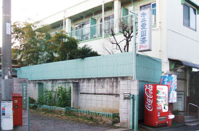
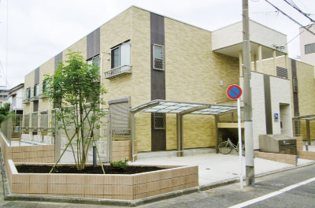
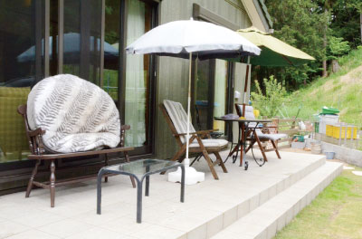

オーナー様の声
アパートにしたのは、土地を売りたくなかったから。自宅から遠いけれど、サブリースなので心配はないですね。東京都青梅市在住 Y様
2015年、浴場を経営されていた場所にアパート（2棟28戸）を建築、同時に奥様の地元へと転居されました。
＊浴場だより47号（2017年10月）に掲出した記事を再編集しています。
6人兄弟のうち5人が風呂屋でした。自分も風呂屋をやるのは当たり前だと思っていたし、仕事は好きでしたよ。
土地を売らずに活用
実は10年前、病気になったんです。今はすっかり大丈夫だけれど、入退院を繰り返していた時期が長かった。家内は「もし何かあって風呂屋を残されても、売るしかない」っていうんだけど、私は売りたくなかった。「じゃあどうするか考えて」といわれて、もともと風呂屋の上に貸室を持っていたし、やるなら賃貸経営だろうなと。
- 
- 本店より暖簾分けして34年前にはじめた第二愛国湯（浴場の上は貸室4戸）
- 
- 2015年完成のアパート「ソレイユA・B」は亀有駅から徒歩10分と好立地
アパートを建てるときは、結局3社に話しを聞いたんですけど、アミックスさんが一番安心できた。収益計画もよかったしね。
自宅から離れていても、サブリースなので安心
ここ（ご自宅）は完成したアパートとは遠いので、何かあってもすぐ行けないことが不安でした。でもサブリースでおまかせしているので、実際は何の心配もなかった。今は、兄弟とか親戚がよく集まってバーベキューをやったりして楽しいですよ。
- 
- 大勢が集まってBBQも楽しめる広いテラス